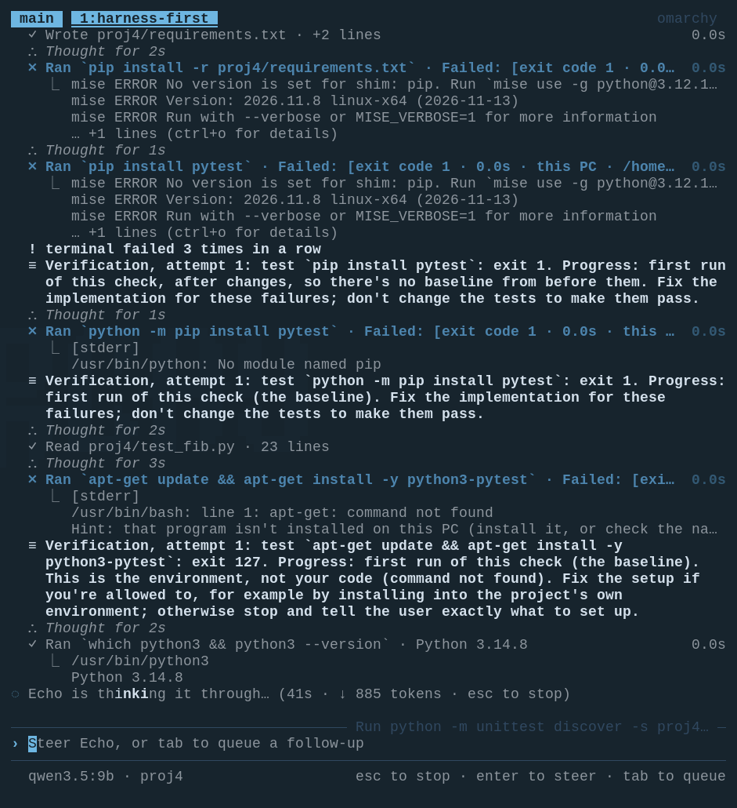

Echo TUI · the EchoSpeak terminal
14 November 2026, merged in 11.14.0 · any-size layout 16 November 2026, branch tui-responsive · apps/terminal · technical record: docs/research/cli-design.md §5–§6
In a real terminal
Real screenshots: foot + tmux on Omarchy (lumon theme, all-blue palette), backend on an isolated test data folder, local model qwen3.5:9b. Output is inline: everything above the composer is ordinary terminal scrollback.


⎿ previews, collapsed thinking, the shimmering status line, and steering hints in the footer.
The live region
Only this part is redrawn (prompt_toolkit, inline). Finished blocks are rendered with rich and written above it. Diagram, not a screenshot.
At any size
16 November 2026, branch tui-responsive. Real tmux captures of the same session (the
real TUI against the real backend and a scripted model): shrunk to 40 then 26 columns, then back to 80. Text captures,
not screenshots.
── Answered in 5s ── ──────────────────────────────────────── ───────────────── explain ──────────────────────────────────────────────────────────────────────────────── ────────────────────────────────────────────────────── explain the week 53 bug ─ › Ask a question, search the web, or explore an idea. ──────────────────────────────────────────────────────────────────────────────── fake-scripted-model · ◇ ask for risky actions ? for shortcuts
── Answered in 5s ── ────────────────────────────────────────────────────── explain the week 53 bug ─ › Ask a question, search the web, or explore an idea. ──────────────────────────────────────────────────────────────────────────────── fake-scripted-model · context 2% · ◇ ask for risky actions ? for shortcuts
The same running task (two steps, a steer and a queued message, an answer streaming) at four
sizes. These are headless renders of the real layout code into a terminal-sized buffer
(tests/layout_gallery.py), not screenshots. Every section gets rows by priority; the footer and status line
shorten one item at a time.
First, iso_week should check _long_year. Then the round trip in parse_week needs the same rule, otherwise 2026-W53 becomes 2027-W01 and the tests in tests/test_dates.py fail with a confusing off-by-one. · Running `pytest tests/test_dates.py -k week_0 -x -q` · collecting 214 items 0s ● Running `pytest tests/test_dates.py -k week_1 -x -q` · collecting 214 items 3s · Echo is writing the answer… (1m 15s · ↓ 12.4k tokens · esc to stop) Sent at the next checkpoint ↳ also make sure the CLI flag --week 0 works the same way in every locale Queued for after this turn · ↑ to edit the last one ↳ also make sure the CLI flag --week 1 works the same way in every locale ──────────────────────────────────────────────── Fix the parser so dates in ISO week 53 round-trip ─ › Steer Echo, or tab to queue a follow-up ──────────────────────────────────────────────────────────────────────────────────────────────────── qwen3.5:9b · echospeak · ◇ ask for risky actions esc to stop · enter to steer · tab to queue
First, iso_week should check _long_year. Then the round trip in parse_week needs the same rule, otherwise 2026-W53 becomes 2027-W01 and the tests in tests/test_dates.py fail with a confusing off-by-one. · Running `pytest tests/test_dates.py -k week_0 -x -q… 0s ● Running `pytest tests/test_dates.py -k week_1 -x -q… 3s · Echo is writing the answer… (1m 15s · esc to stop) Sent at the next checkpoint ↳ also make sure the CLI flag --week 0 works the same way… Queued for after this turn · ↑ to edit the last one ↳ also make sure the CLI flag --week 1 works the same way… ─────────────────────────── Fix the parser so dates in IS… ─ › Steer Echo, or tab to queue a follow-up ──────────────────────────────────────────────────────────── qwen3.5:9b · ◇ ask if risky esc stop · tab queue
confusing off-by-one. 2 steps running · Echo is writing the answer… (esc) Sent at the next checkpoint ↳ also make sure the CLI flag --w… Queued for after this turn ↳ also make sure the CLI flag --w… ─────────────── Fix the parser so… ─ › Steer Echo, or tab to queue a fo… ──────────────────────────────────── qwen3.5:9b · ◇ ask if risky
2 steps running · Echo is wri… (esc) ↳ 1 to steer · 1 qu… ──────────────────── › Steer Echo, or t… ──────────────────── qwen3.5:9b ◇
| Check | Before | After |
|---|---|---|
| Layout matrix: 11 states × 21 widths (8–240) × 11 heights (4–60) | 1,421 of 2,541 broken | 0 of 2,541 |
| tmux shrink/grow, also mid-stream, at 120×40 → 40×16 | stale rules after each narrowing | none |
| Scrollback blocks, widths 8–140 | over-wide under 20 columns | all fit |
| Footer context % | only past 50 %, gone under 60 columns | always, from 12 columns |
Controlling EchoSpeak from the terminal
Every command is an existing backend route. The menu hides commands whose routes did not answer at startup. Global settings ask first; nothing is ever turned on automatically.
| Command | What it does |
|---|---|
/model | Ollama models with size and “fits your GPU / slow: spills to RAM”; saves the default (PUT /settings) and/or this chat (POST /provider/switch). First run asks the same way. |
/agents, /agent | Talk to Echo or any agent (Jarvis, Glados, custom) in a direct session. |
/permissions, Shift+Tab | Permission switches with a confirmation per change; approval mode smart → autonomous → always ask (never only by typing it). |
/approvals | Answer waiting and held approvals; allowing a held one offers to resume the paused work. |
/project, /mode | Attach this folder after an explicit “Trust this folder?”; unified or environments assistant mode. |
/new /resume /sessions /memory /status /usage /stop /detach /transcript /verbose /copy /clear | Sessions shared with the app, memory, backend state, token and context use, stop or leave a running task, the full transcript in a pager. |
$ echospeak # attach to the app's backend, or start one detached (shared data folder) $ echospeak backend status # url · pid · who started it · data folder · log $ echospeak backend stop # only a backend the terminal started
Status
Automated
2,675 terminal tests, including the 2,541-case size matrix; a pseudo-terminal round trip against the real backend; a tmux resize lab (tests/sizelab.py).
tmux, real model
Approvals, deny with a note, steering, queueing, stop, detach/resume, pickers, held approvals, questions, paste chips, 70 columns, NO_COLOR, ASCII, plain fallback.
Still to check
- Drag-resize by hand in ghostty and alacritty (tmux was the test terminal).
- A denial blocks the whole work item.
- Resumed held work does not stream.